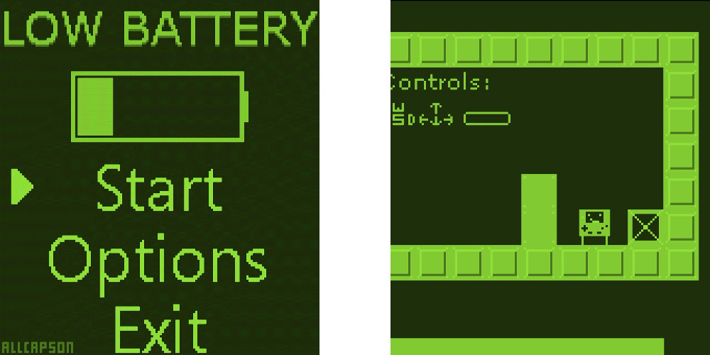

I'm a nerd who likes mechanical keyboards,
programming, video games, photography, and listening to music. I enjoy making lights blink and stuff move around on screens.
I graduated from Redmond High School in June 2015.
I'm currently taking classes at Bellevue College, with plans of transferring to UW Bothell in the fall.
I've worked with:
- C++ (Arduino too!)
- C#
- HTML, CSS, Javascript
- Java
- PHP
- Python
- SQL
- XML, XAML (XAML used for WPF forms.)
Projects
Internet X-mas Tree Project (Dec 2015)

For Christmas last year, we decorated our tree with a 20m strip of
individually-addressable RGB LEDs. I first made a python program to
change the colors and patterns of the tree, then a web interface to
control it. I didn't know any PHP before this, so I learned enough
in the time of a few hours. I also wasn't familiar with Git before
this, so I took it upon myself to learn that as well.
Project available on my GitHub page.
GBJAM 4 - Low Battery (August 2015)

Made for GBJAM 4 a "game jam" themed around the style of the
original GameBoy hand held. Like any other "game jam",
everything had to be made from scratch.
It must have the original GameBoy resolution of 160px x 144px (or scaled), and use only 4 colors.
For this project, I learned how to use the MonoGame game engine, which is a open source implementation of the
Microsoft XNA 4.x framework.
Due to other circumstances, I was able to develop most of the gameplay, but not very many levels. It's very short.
Check it out here.
Ludum Dare 32 - Operation Peeps (April 2015)

Ludum Dare is a "game jam" event where solo participants have 48 hours
to make an entire game based off of the given theme. All of the code and art assets must be created from scratch.
I took this event as an opportunity to better familiarize myself with the Unity3D game engine (so that I could later use it for Hunt the Wumpus).
My entry can be found here.
Hunt the Wumpus (Feb - May 2015)
Hunt the Wumpus was an event where groups were assigned to work on their own "Hunt the Wumpus" games, based only off of the given criteria.
My team placed 1st runner up in the competition.
Our game used the Unity3D game engine, and was coded in C#. It also had controller and touchscreen support.
I made a website to show it off. It contains some screenshots and the now deprecated Unity web player. Use the standalone build.

This was my final project in my Computer Science and Engineering class. It's an 8x8 LED display and a controller with 6 buttons.
I programmed it to play Snake, complete with a menu and high score system.
I designed the boards myself in Fritzing, etched them and soldered the components together.
"ChrisBot" was my all-purpose name given to a few different programs I wrote. At first, I wanted to create a bot for Skype that could react messages from a group chat. Over time I started to add more features to it, including
more commands, hidden secrets, and events that would go off at a given time. At one point, I had it announce the time at the top of every hour, but that got annoying quickly.
You can view the most recent version of the Python "ChrisBot" here.
"ChrisBot" started with the Skype4Py library, which is a Python version of the Skype4COM library, both of which are now deprecated. At one point, I modified it for use with Twitch.tv IRC.
The most recent form of "ChrisBot" (pictured) was in the form of a countdown timer, which I would use to send messages to one of my friends every day, indicating how long was left until the release of Fallout 4. This version
makes use of the Skype4COM library.
Using a Raspberry Pi, a 16x2 LCD display and a real-time clock module (not shown), I created a clock which kept the time, even when the device was turned off.
It also made it clear to anyone around that it was not a bomb.